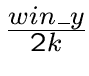

A l'écran
Enfin, de toutes ces intersections, il faut garder la plus petite
non négative, qui croise un mur. On a donc la distance avec le
mur le plus proche qui doit être affiché.
 convient comme demi-hauteur du mur en nombre
de pixel.